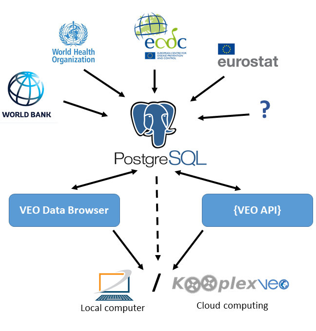

VEO Data Browser
The VEO Data Browser is a web application that communicates with an SQL server. The major aim of VEO Browser is to give a framework to store, categorize and visualize data tables related to VEO project. Partners can select the data tables of interest in the VEO Data Browser that finally generates a code for direct downloading of the merged data tables from the SQL server.

-
How goes data to the SQL server?
In the background R scripts downloads the data tables from public dataset like (World Bank, WHO, etc.) through API if possible then the data is uploaded into SQL database.
-
Is it possible to upload custom data tables?
Yes, please contant through the email below for details.
-
What is the structure of the database?
The tables contains indicators in a given geographical and time resulutions:
- Geographycal resolution (https://ec.europa.eu/eurostat/web/nuts/background):
- Country
- NUTS1: major socio-economic regions
- NUTS2: basic regions for the application of regional policies
- NUTS3: small regions for specific diagnoses
- LAU: Local Administrative Units (cities)
- Time resolution:
- Permanent: if indicator does not change in time (eg. Local name of a country)
- Year: Indicator changes in yearly
- Month
- Day
- etc
More categories can be inserted if there is a need. In this version only those tables can be merged that are in the same category (except the "Permanent" tables those can be merged with tables derived from any time resolution. There are two other tables, one that store metadata of all tables ("master_table") and another one that contains metadata of each columns in each tables ("master_schema"). It is possible to direct dowload any tables separately (see the app).
Contact:
Krisztián Papp
email: krisztian.papp@phys-gs.elte.hu